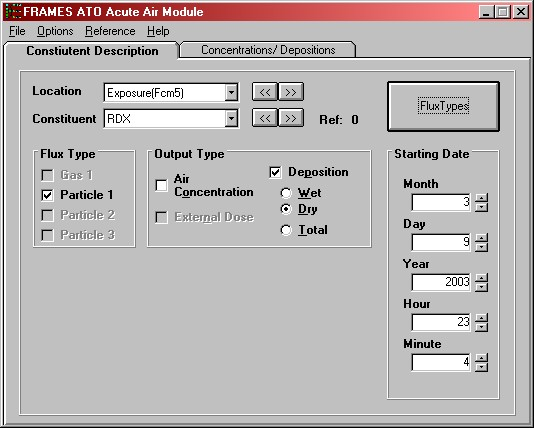
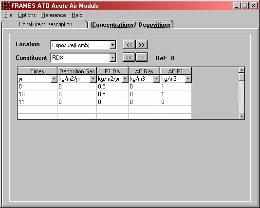

Fig: Particle Definitions
Use this module only if you know the concentrations, deposition rates and/or external dose in air. The constituent concentrations, deposition rates, and external doses, at user provided points in time, are entered directly through the interface. This module does not compute the ingrowth of progeny because the user is assumed to know everything about the source, including progeny emission. Therefore, this module assumes that the progeny emissions are input along with the parent emissions.
There are two different models to choose from, acute and chronic. The acute model should be used when the exposure is of a short-time period i.e. less than one year or a one time release. The chronic model, on the other hand, should be used when the exposure occurs over an extended time period i.e. greater than one year or is multiple exposures. The only difference between the two modules is that user does not have to input the specific beginning time of the exposure for the Chronic Air module. The reason being that a Chronic module is designed to analyze the effects of exposure to constituent(s) over a longer period of time. A choice of ATO Acute Air Module or ATO Chronic Air Module is available in the General Options of a User Defined module.
For more information about the file specification that this module produces see ATO Specifications on the FRAMES web site.
Flux Types Button
The user defines the flux types in both the models. ATO Chronic Air Module has been selected. Selection of which flux types will be used for each constituent occurs later. Selecting the "Flux Types" allows for the specification of the physical form of the constituents being released. The user may define up to four flux types - Gas, Particle 1, Particle 2 and Particle 3. All four or a minimum of one must be selected for analysis. The default flux type is a release of particulates having a radius of 0.03 um and a particle density of 1.5 g/cm3. To turn on other particulate categories, select the appropriate check box and either accept or modify the default particle radius and density (3.0 um and 1.5 g/cm3 for "Particle 2," and 10.0 um and 1.5 g/cm3 for "Particle 3"). If any constituents in this scenario are released as a gas, make sure to select the "Gas 1" check box.
Reactive Fraction
Units: fraction
Range: 0 to 1 Inclusive
Defines the fraction of the gas that is reactive. Mostly used for Radon emissions.
Density
Units: g/cm^3 (grams per cubic centimeter)
Range: Greater than 0.
Defines the ratio of suspended mass to the volume of air. Input a density for each selected particle.
Radius
Units: um (micrometers)
Range: Positive integer greater than 0.
Defines the radius of the suspended particle. Input a radius for each selected particle.
Fig: Particle Definitions
Starting Date/Time (Only in Acute Exposure Module)
Units: Month, Day, Year, Hour and Minute
Range: None
Enter the month, date, year and the time of exposure occurrence. Use the up or down arrow buttons next to each component of the date and time to select the date and time of the exposure. This section does not appear in the definitions tab, for Chronic Air Module.
Location Parameter
The location parameter lists the module(s) connected to the ATO Module. There can be multiple locations, i.e. modules) connected to the ATO. Use the drop down box or the « » buttons to select the next location. In the following figure, the drop-down menu is displayed and in this case, the only location choice is an Exposure Pathway, exp5. Select flux types and output types for each location, constituent combination.
Constituent
The parent constituents are the chemicals or radionuclides selected by the user in the FRAMES Constituent Database. Use the drop down box or the « » buttons to select the next parent. For radionuclides, progeny also can be entered. From the options menu select 'Include Progeny' to use progeny for all radionuclides in the scenario. The applicable progeny will appear when the parent is selected. Constituent must be selected for each flux type, output type and location combination.
Flux Type
The user must select the flux types for each constituent by placing a check mark in the box by the desired flux type. Up to four may be selected (gas, and three particles) for each constituent. Only the available flux types are enabled for selection. Flux types are defined on the Definitions tab.
Output Type
The user must select the output type, Air Concentration and/or Deposition, for each constituent and exposure location. Multiple output types can be selected for each constituent. For location Deposition, the user is limited to selecting only one output type, Wet, Dry or Total. An additional output type choice, namely, external dose is available for radionuclides and their progeny, if any. For each output type and flux type selected, separate columns will be generated in the Concentrations Tab where the user will need to input Time/Concentration values.

Fig: Output Types
Location
The location lists the module(s) connected to the ATO Module. There can be multiple locations, i.e. modules) connected to the ATO. Use the drop down box or the « » buttons to select the next location. In the following figure, the drop-down menu is displayed and in this case, the only location choice is an Exposure Pathway, exp5. Enter flux types and output types for each location, constituent combination.
Constituent
The list of constituents is identified by a 'Constituent' database module. Each of the constituents selected for analysis in the 'Constituent' module appears in this drop-down box. Use the drop down-box or the « » buttons to make differeent constituent selections. As a new selection is made the spreadsheet closest to the drop-down box is updated with the appropriate time series. If the constituent has progeny then an identical set of controls will appear. The progeny will be displayed as the parent is displayed but only those progeny that relate to the displayed parent are available for data entry.
Time
Units: hr (hour) for Acute Air Module and yr (year) for Chronic Air Module
Range: Greater than 0.
Acute Air Module is chosen for exposure analysis of short duration and the default time unit in this module is hours. The default time unit in Chronic Air Module is years (yr) as this module supports analysis of long-term exposure to constituents. A minimum of two times must be entered. Times must be entered in chronological, ascending order (i.e., 0, 5, 10 not 0, 10, 5). The spreadsheet rows must be used consecutively. Anything below a skipped time row will be deleted. A point in time at which a measurement/estimate is given should be relative to all other times entered in the interface and the overall simulation.
Air Concentration (AC)
Unit: kg/m^3 (kilograms per cubic meter)
Range: Greater than or equal to 0
Deposition (Total, Wet or Dry)
Units: kg/m^2/yr (kilograms per square meter per year)
Range: Greater than or equal to 0.
External Dose (External)
Units: Activity
Range: Greater than or equal to 0.
For each exposure location and each constituent a concentration, deposition or dose must be input. Each output type that is selected on the Constituent Description tab appears as a separate column in the output product table. Items left blank in rows that have a valid time defined are filled with zeros. All rows after and including the first row with an invalid time are ignored and cleared.

Fig: Concentration / Deposition